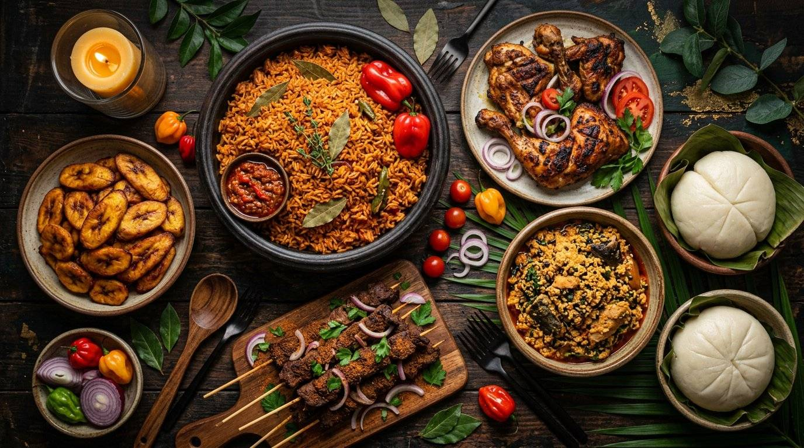

Branch 01 · Najma
Tobize African Restaurant
The original taste of home — smoky party jollof, suya, egusi & pounded yam, yam porridge and Isiewu, cooked with rich Nigerian spices.
Enter African Restaurant
Order on Talabat / Snoonu

Tobize Intercontinental
“Flavors Beyond Borders” — lamb chops, grilled farrouj, seafood, pasta, pizza, desserts and fresh juices in a modern dine-in space.
Enter Intercontinental
Full Menu on tobize.com